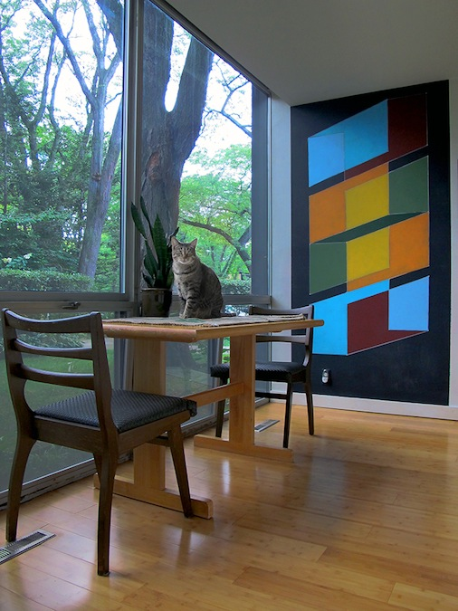

Upon learning of the erasure of Color Cubes, Detroiter, math teacher, and local public art enthusiast Melissa Francese paints a six foot tall version of it onto the wall of her Lafayette Park dining room.
"It makes me want to cry that it's gone," she says. "I lived downtown four years ago. I would see it a lot on bike rides and it was one of the things I always showed my friends who came to visit. I missed it when it was painted over and I wanted to be able to see it, so I painted my own. I tried to get the colors right but it was challenging -- I had to change it up a bit."
See ART APPRECIATION , COLOR CUBES , IMPERMANENCE , and DAVID RUBELLO .